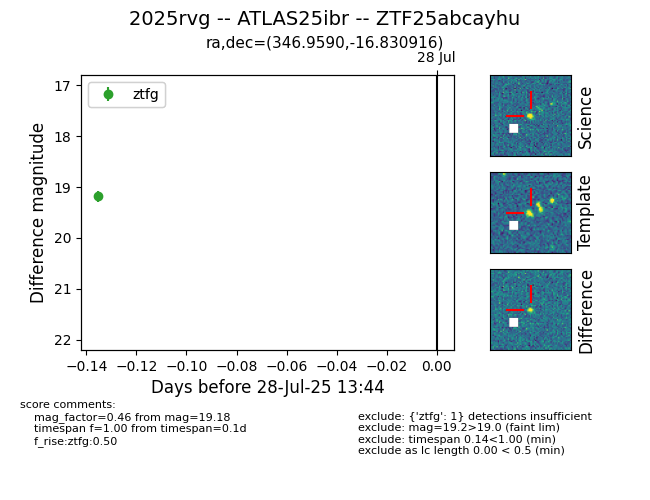

Target 2025rvg at 2025-08-07 22:28, see:
FINK: fink-portal.org/2025rvg
Lasair: lasair-ztf.lsst.ac.uk/objects/2025rvg
ALeRCE: alerce.online/object/2025rvg
TNS: wis-tns.org/object/2025rvg
YSE: ziggy.ucolick.org/yse/transient_detail/2025rvg
alt names
ZTF25abcayhu (ztf,fink)
2025rvg (tns,yse)
ATLAS25ibr (atlas)
PS25fsk (panstarrs)
coordinates:
equatorial (ra, dec) = (346.9590,-16.83092)
galactic (l, b) = (50.8163,-63.93900)
photometry
last atlasc=19.10, atlaso=19.33, ps1::w=19.49, ztfg=19.56, ztfr=19.55
1 atlasc, 1 atlaso, 4 ps1::w, 4 ztfg, 4 ztfr detections
